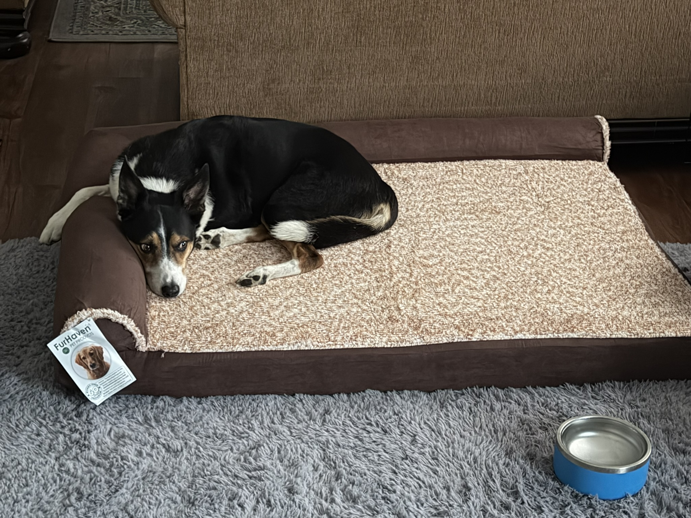
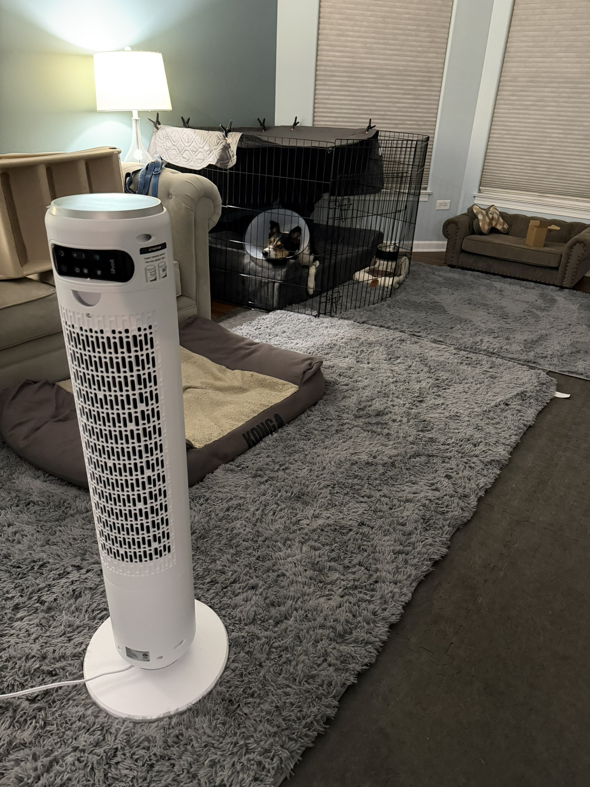
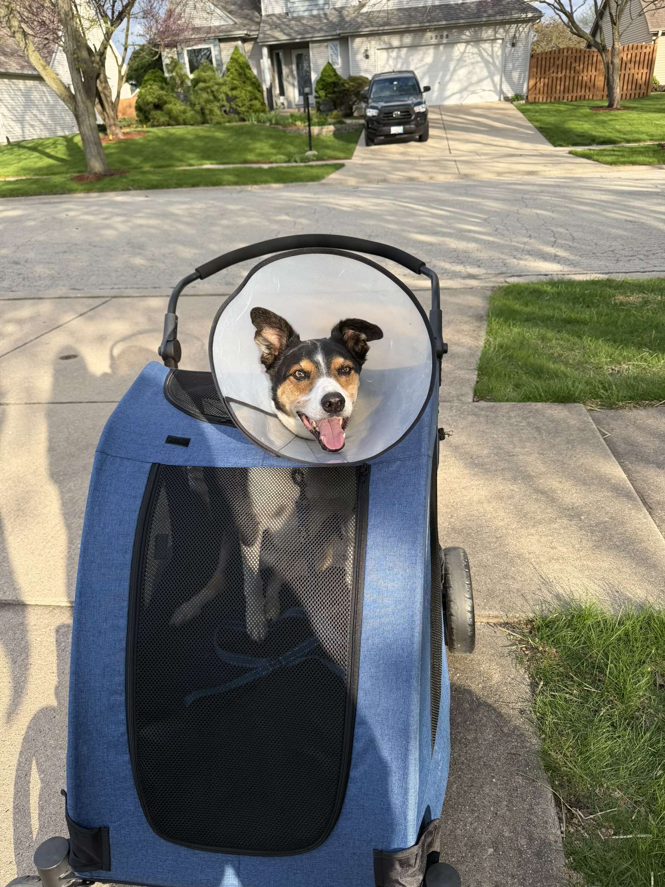
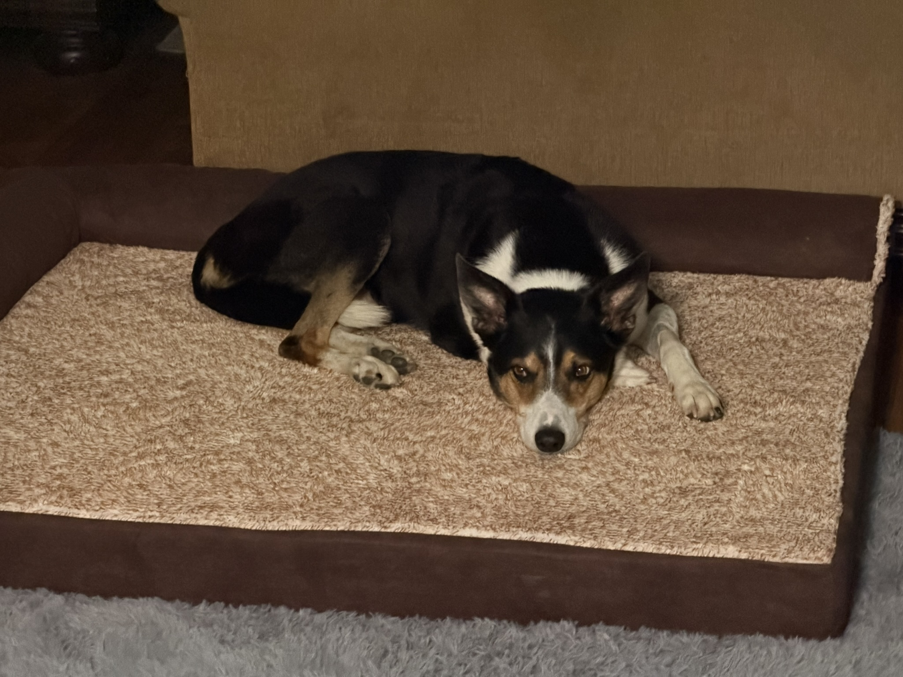

Creating a recovery space
Exercise pen, covers, water placement, camera visibility, and how the layout changed.
PRODUCTS & EQUIPMENT
I kept this as one page because owners should not have to open several product pages to understand the setup. The equipment is organized by the problem I was trying to solve, what Oliver actually used, and what I would choose again.
This is not a shopping list, endorsement page, or veterinary recommendation. It is a record of what I used for Oliver, why I used it, what worked, and what I would do again.
START WITH THE PROBLEM
Exercise pen, covers, water placement, camera visibility, and how the layout changed.
Big Barker, FurHaven, cool floors, blankets, and why the most expensive surface was not always his choice.
The quiet fan became one of the simplest and most useful parts of both recoveries.
Stroller, lift harness, couch steps, traction, stairs, and transportation.
Modified walks, nose work, low-movement play, and tools that protected routine.
Cameras, the basement bunker, brown noise, and equipment that supported the whole dog—not only the knee.
BEFORE YOU BUY ANYTHING
Before surgery, it is easy to feel as though buying the right equipment will make recovery predictable. It will not.
What helped me most was identifying the problem I needed to solve. Once the problem was clear, the useful product—or improvised solution—became much easier to recognize.
Everything else made recovery easier, more comfortable, or more manageable. Those three made the basic plan possible.
PROBLEM 1
The goal was not to create the smallest possible space. It was to prevent one bad decision while still allowing him to lie down, stand, drink, and reposition safely.
I used two full-size KennelMaster exercise pens. Each pen had eight attached panels, for sixteen panels total.
I really needed twelve panels for the 3-by-3 configuration I wanted. Because the panels could not be removed, I folded four together to eliminate the extra space.
Would I use them again? Definitely. The exact setup required some improvisation, but the pens gave me the size and flexibility I needed.
I clipped a blanket over part of the pen to create a more den-like feeling while leaving the front open.
This mattered because Oliver normally used the basement bunker during storms and fireworks, but stairs made that routine harder during recovery. Spring storms were frequent, so the partial cover gave him some sense of enclosure upstairs.
Would I repeat it? Yes.
I used the sling only a few times, mostly while helping Oliver come upstairs during the period when the leg was weakest.
It was awkward, and Oliver was not a fan. Once he regained his bearings, he could manage more on his own, and I could assist him directly when needed.
Would I keep one available? Yes. It was not useful for long, but it helped during the short period when I truly needed it.
The cone made nearly everything more awkward: eating, drinking, sleeping, turning, and moving inside the pen.
I underestimated how much larger Oliver's circumference became while wearing it. He hit the pen walls several times in the first setup.
The fabric-covered outer rim softened the impact when he bumped into the pen, furniture, or me.
Would I use it again? Yes. Without it, he would have investigated the incision and could have damaged the stitches.
PROBLEM 2
No single bed solved every comfort problem. Support, height, temperature, familiarity, and location all mattered.
The bed remained firm for months and became the main bed in the later recovery setup.
Its height also helped after Oliver began getting off the couch again. With the bed positioned in front of the couch, he did not have to land directly on the hard floor.
Would I buy it again? Yes.

I bought the Big Barker before surgery because I hoped the higher, more supportive bed would help with arthritis.
Oliver was already used to sleeping on it, so I placed it in the pen during the first recovery. Once he returned to sleeping upstairs, I moved it back upstairs and used the FurHaven in the pen.
Would I buy it again? Yes, even though it is expensive.
I originally bought the Kuranda for Sasha to help her stay cool. Oliver occasionally used one in the basement, but it was never his preferred bed.
Would I buy it specifically for Oliver's TPLO recovery? Probably not. It was available, but it was not central to his comfort.
Oliver had urinated on himself after anesthesia during an earlier procedure, so I covered the bed in case it happened again.
This time, the blanket never had a mess to contain. It was easy to wash, and I would still use it again because it protected the bed against a realistic possibility.
I initially used a box fan because it helped drown out outside noise, but it was too loud for Oliver to rest comfortably.
The LEVOIT fan was extremely quiet and oscillated, so he stayed cooler without having a direct breeze on him at all times.
Would I use it again? Yes.

Oliver used the mat in the 42-inch crate at the lake. It stayed supportive and mostly dry.
Would I buy it again? Yes.
PROBLEM 3
A normal floor-level bowl became difficult once Oliver was wearing the cone. The cone hit the floor and the sides of the bed before he could comfortably reach the water.
The slanted bowl helped because the angle gave him better access. I still needed more height, and I could not find a commercial stand that fit the exact space.
I turned a stable Tupperware bowl upside down and placed the slanted water bowl on top. At first, I used a tray underneath, but it was too large. I replaced it with a towel to catch spills and protect the rug.
The best solution in this case was not a specialized recovery product. It was a stable improvised setup that matched the cone, bed, and available space.
PROBLEM 4
I introduced Oliver to the stroller before surgery. He could still walk our normal route, but I did not want to risk further damaging the CCL before the procedure.
That preparation meant the stroller was already familiar when he needed it after surgery.
At first, I helped lift his back legs into it so he would not jump. Later, he began getting in more independently because the stroller was low enough that he did not need a hard push.
Loading took some practice, but it was not difficult.

Oliver used the larger crate at the lake. The extra room was nice, although I am not convinced it was make-or-break.
The value came from having a contained place that fit the larger cooling mat and gave him enough room to settle during travel recovery.
The hammock was not purchased for TPLO. It was already part of our normal travel setup.
After surgery, it allowed a sleepy Oliver to lie down safely and reduced the amount of bracing he had to do when the vehicle stopped in traffic.
I would mention it as part of transportation planning, but not as a required TPLO product.
Cameras were not the single most important recovery tool, but I used them often.
Oliver would wake up whenever I entered the room. Cameras let me check whether he was sleeping, pacing, licking, or changing position without disturbing him.
I already owned some cameras, so adding more in the places he normally went was easy.
PROBLEM 5
These tools supported care. The medications themselves were prescribed specifically for Oliver and are not recommendations for another dog.
I used the packs to help with knee swelling and to cool the incision area.
Oliver tolerated icing because I gave him a treat during the session, which kept him occupied.
Would I use them again? Yes.
Oliver had several medications at different times. Baxter also had his own pills and schedule.
The organizer helped me separate the two dogs' medications and keep track of what had already been given.
Would I use it again? Absolutely.
I did not buy the pill cutter until later, but it quickly became one of the most practical purchases.
Both Oliver and Baxter take half or quarter tablets. The cutter saved time and kept me from hurting my fingers trying to break tablets by hand.
Would I buy it again? Definitely.
Oliver's records include gabapentin, carprofen, trazodone, acepromazine, cephalexin, and other case-specific instructions at different stages.
I am not reproducing doses or a schedule here because those decisions belonged to his veterinary team and the internal record still contains timing and strength details that require reconciliation.
WHAT I WOULD BUY FIRST
The pen protected Oliver from unsafe choices. The bed gave him a supportive place to rest. The cone protected the incision.
The fan, stroller, cameras, ice packs, pill organizer, larger crate, cooling mat, and raised water setup all made recovery easier or more manageable.
But if someone asked me where to begin with limited money, I would begin with containment, support, and incision protection.
WHAT I WOULD SKIP
I cannot identify anything I bought that I clearly regret or would definitely refuse to purchase again.
Some items mattered less than others. The Kuranda was not Oliver's preferred bed. The 42-inch crate was useful but not essential. The sling was awkward and needed only briefly.
That is different from saying those items were failures. They solved narrower problems or worked for shorter periods than the core equipment.

WHAT THIS PAGE LEAVES OUT
Oliver's Fi collar stayed off this page because it was used to help locate him if he ran off at the lake, not to guide recovery decisions.
I also removed the vehicle make and model. The useful lesson is to create a safe travel setup that allows the dog to lie down, reduces unnecessary bracing, and supports controlled loading and unloading.
Exact prices, purchase links, and long-term comparisons are not included until they can be verified. This page is about lived use, not affiliate-style shopping recommendations.
THE NEXT QUESTION
The recovery timeline gives the dated sequence. The lessons page then pulls together what I would repeat, what I would change, and what only became clear afterward.